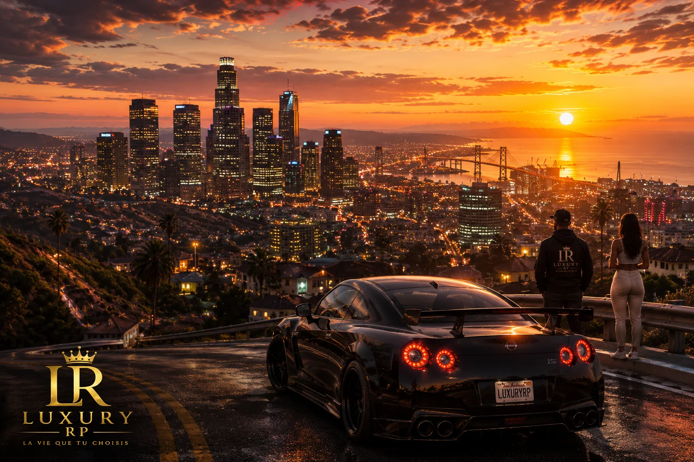
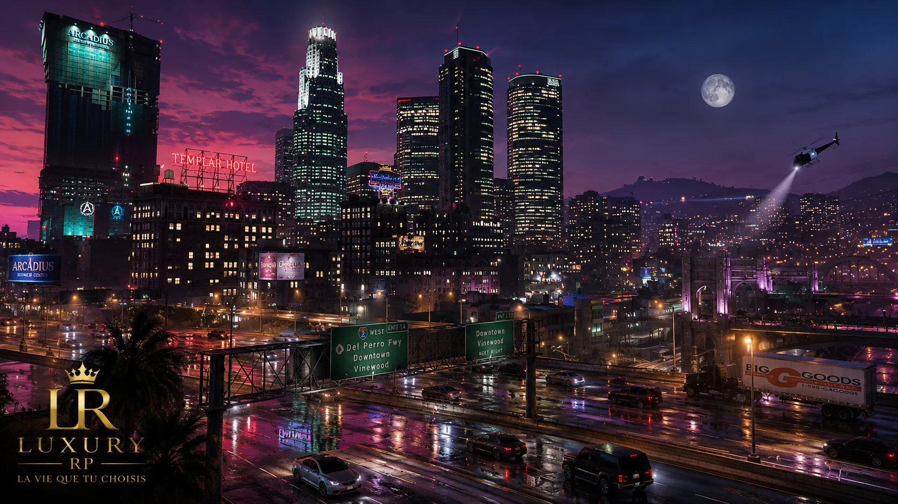
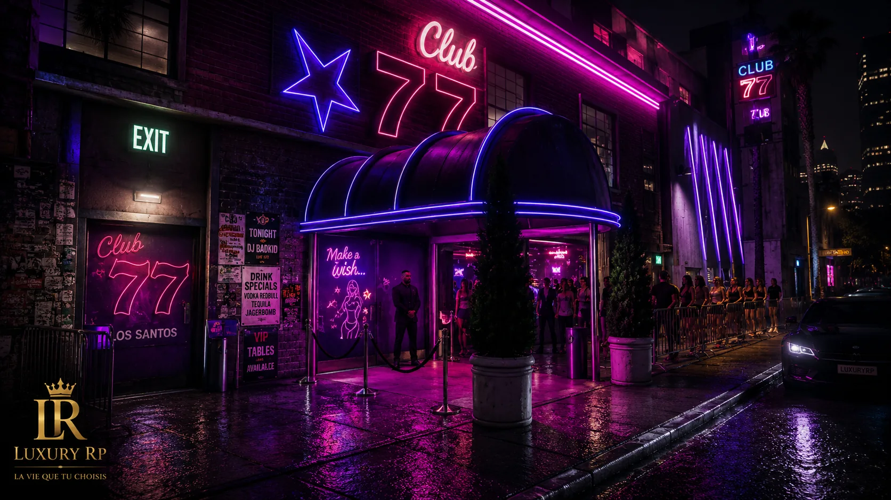

Groupes illégaux
Ballas, Vagos, Marabunta, Bratva, Mafia Arménienne, Cosa Nostra, Lost MC et SOA disposent désormais de visuels mieux alignés avec leur identité.
Suivez l’évolution du portail, les optimisations importantes et les prochaines étapes du projet.
Cette mise à jour intègre les nouveaux visuels des gangs, mafias, bikers, du Casino et de Cayo Perico. Les fiches concernées gagnent en personnalité, avec une galerie plus cohérente et une ambiance plus proche de leur univers RP.
Ballas, Vagos, Marabunta, Bratva, Mafia Arménienne, Cosa Nostra, Lost MC et SOA disposent désormais de visuels mieux alignés avec leur identité.
La fiche Casino reçoit de nouvelles images plus premium, pensées pour renforcer son rôle de lieu nocturne, social et événementiel.
Une nouvelle vue de l’île enrichit l’univers Cayo sans exposer d’informations sensibles sur la carte publique.
Un suivi clair de l’évolution du portail, des optimisations et des prochaines étapes de Luxury RP.

Micro-correctif visuel du bloc panel, clarification du parcours nouveau joueur / joueur actif et reprise des textes trop généraux dans les fiches sociétés.
Ajout du changelog, du guide d’arrivée, du règlement RP, de la page vision, des recrutements ouverts, des fiches sociétés enrichies et du rapport performance.

Mentions légales, confidentialité et cookies réécrits pour asseoir un site plus sérieux et irréprochable.
Retrait de la partie illégale sur la carte interactive publique et conservation uniquement des points légaux et lieux clés.

Ajout des interactions médias, zoom carte, blips maîtrisés et lightbox premium.
Enrichissement progressif des fiches, visuels dédiés, informations de recrutement.
Statut serveur, Discord, annonces dynamiques et actualités automatisées.
Quartiers, favoris, filtres avancés et données en temps réel.